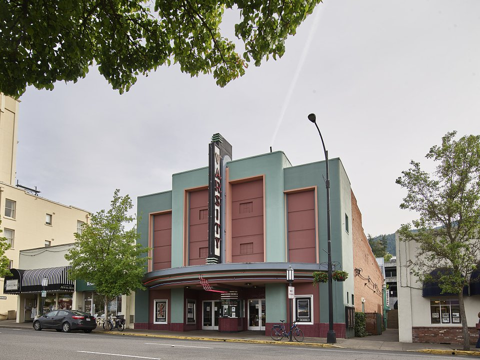

Downtown · Historic hotel
Ashland Springs Hotel
A restored 1925 hotel in the heart of downtown.
Official details for Ashland Springs HotelShakespeare, wine and a creekside park.
Ashland is a small southern Oregon town famous for the Oregon Shakespeare Festival, which runs plays from spring through fall in three theaters downtown. Land at Ashland’s own airport, stay at the restored Ashland Springs Hotel or Lithia Springs Resort, see a play, walk Lithia Park along Ashland Creek, taste at Rogue Valley wineries and visit gold-rush Jacksonville.

Time illustration: direct distance at 150 KTAS plus 15 minutes for departure and arrival, matching the discovery page. Use ForeFlight for your actual flight plan.
S03, Ashland Municipal–Sumner Parker Field, is a non-towered city airport at 1,889 feet with a 3,603-foot runway about 10 minutes from downtown. Rogue Valley International (KMFR) in Medford is 20 minutes north.
Ashland Municipal Airport, Ashland, OR
Short runway with terrain and trees near both ends; Runway 12 has rising terrain. Deer and birds on the field. 24-hour credit-card fuel. (FAA chart supplement remarks.) No live fuel price is shown.
Southern Cascades flying: high terrain and mountain wave around Shasta and the Cascades, summer thunderstorms and wildfire smoke, winter icing and snow, and high density altitude at the higher fields. About 2110 nm from Myrtle Beach: two long days each way with several fuel stops. Plan a week, or overnight on the way out and back.
Rates and availability need travel dates. Festival weekends book early.
A restored 1925 hotel in the heart of downtown.
Official details for Ashland Springs HotelBungalows and mineral-water soaking tubs.
Official details for Lithia Springs ResortAn 1861 inn and restaurant in a gold-rush town.
Official details for Jacksonville InnPrices and availability for your dates, through our partner Stay22. This is an affiliate link: we may earn a commission at no cost to you. The picks above are never paid.
Reserve weekend dinners.
French-Northwest cooking near the theaters.
Official details for AmuseRestaurants on the plaza and Main Street.
Travel Ashland for More restaurantsBook theater tickets first.
Shakespeare and new plays in three theaters, spring to fall.
Oregon Shakespeare FestivalThis prototype links to the local visitor site. It does not yet match events to your travel dates.
Plays in three theaters.
OSF for Oregon Shakespeare Festival seasonFilms around town.
Travel Ashland for Ashland Independent Film FestivalWine country at its best.
Travel Ashland for HarvestCheck the local calendar when choosing a weekend, and confirm dates and tickets with the organizer.
A sample theater weekend. This is a two-day flight each way; plan a week. No bookings or availability confirmed.
Land at S03 mid-morning.
Lithia Park and lunch downtown.
A matinee, then back to the airport.
Land at S03, subject to weather and your actual flight plan.
Lithia Park.
Dinner at Amuse, then a play.
Rogue Valley wineries.
Jacksonville.
A second play.
Coffee on the plaza.
Return the car and allow time at the airport.
Mountain and coastal weather changes fast; leave with a margin.
Rogue Valley wineries.
Jacksonville.
Dinner at Amuse and a play.
These details make the difference between an appealing list and a usable getaway.
Theater tickets, then the hotel.
About 2,110 nm from Myrtle Beach: two long days each way.
Short with nearby terrain; check performance.
May to October.
Picks and links reviewed by WingAway Weekends. Hours, prices, menus and availability change often, so confirm directly with each place before booking. Spotted something out of date, or have a favorite we missed? Email us at hello@wingawayweekends.com.
WingAway Weekends helps you discover the destination. Use ForeFlight and current official aviation information for route, performance, weather, NOTAMs and preflight decisions. Flight planning and PIC responsibility stay with the pilot.
One fly-in weekend, a Fly to Lunch pick and the newest guides, about once a month.
Free. Unsubscribe anytime.